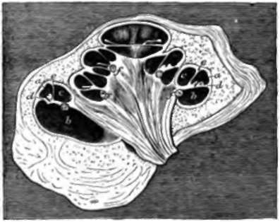
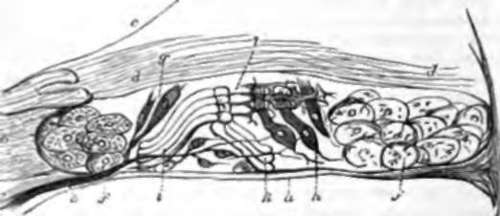

194. The Cochlea
Description
This section is from the book "Animal Physiology: The Structure And Functions Of The Human Body", by John Cleland. Also available from Amazon: Animal Physiology, the Structure and Functions of the Human Body.
194. The Cochlea
The Cochlea is, in its early development, an outgrowth from the vestibule, and as it elongates it becomes spirally coiled, taking two complete turns and a half, tapering to its extremity, and acquiring, as has already been remarked, the appearance of a snail's shell. The base of the shell is at the perforated plate of the inner auditory meatus, the apex abuts against the tympanic end of the Eustachian tube, the mouth is in connection with the vestibule, and in the centre of the coils of the tube is a pillar of bone, the modiolus, pierced with canals containing the cochlear branches of nerve. Around the modiolus is a spiral ledge of bone, the lamina spiralis, projecting into the interior of the tube; and continued directly outwards from the edge of this is a fibrous partition, the basilar membrane, dividing the tube longitudinally into two parts, and attached at its outer edge to the wall of the tube by muscular fibres, which can keep it tense. Another and much more delicate partition, the membrane of Reissner, extends upwards and outwards from the lamina spiralis to the outer wall of the tube; and thus there are three parallel passages separated from one another. Of these, the upper or that turned towards the apex of the cochlea, is called the scala vestibuli, and commences in the cavity of the vestibule; the middle passage, placed between the basilar membrane and membrane of Reissner, is called the canalis membranacea, and is continuous with the membranous vestibule, being connected with the saccule by a little duct, the canalis reuniens; while the lower passage, the scala tympani, starts from the closed fenestra rotunda, and is separated from the vestibule by the basilar membrane, so that its only continuity with that cavity, in the fresh state, is by a small opening at the apex of the cochlea, the helicotrema, where it communicates with the scala vestibuli beyond the blind extremity of the canalis membranacea. It will be understood from this that the two scalæ are filled with perilymph, while the canalis membranacea is lined with epithelium, and contains endo-lymph.
Fig. 131. Cochlea or New-born Pig, section, a, Canalis membranacea; b, scala tympani; c, scala vestibuli; d, basilar membrane and organ of Corti; e, membrane of Reisaner; f, spiral ganglion. Reichert.
Fig. 132. Organ or Corti, diagrammatic view, a, Basilar membrane; b, tough structure attached to the edge of the osseous lamina spiralis, termed its limbus, and presenting a toothed appearance; c, membrane of Reissner; d, d, membrana tectoria; e, nerve perforating the basilar membrane; f, f, epithelial cells; g, h, inner and outer groups of ciliated or hair-bearing cells; i, k, inner and outer rods of Corti; l, membrana velameniosa.
In the interior of the canalis membranacea, situated on the basilar membrane, is the sensitive part of the cochlea, an exceedingly complicated structure called the organ of Corti. This organ contains numerous sets of nucleated cells, some of them furnished with stiff cilia or hairs, and it is permeated with very fine ramifications of the cochlear nerve; and it also contains an outer and inner range of very remarkable strap-shaped structures of comparatively tough consistence, one range leaning against the other, like the rafters of a house. These strap-shaped structures are called the rods of Corti. It is curious to note that, while the osseous cochlea diminishes from base to apex, these rods increase in length (Urban Pritchard), and the basilar membrane on which they lie increases in breadth as the apex is approached (Henle).
195. It is difficult to understand the exact mode of action of the different parts of the internal ear. It has been long generally assumed that the semicircular canals are useful in determining the directions whence sounds proceed, and that the cochlea is a kind of spiral harmonicon, vibrating in different parts of its extent in unison with sounds of different pitch; and these appear to be probable suppositions; but neither the actions of the semicircular canals nor those of the cochlea are understood in detail.
The most distinct hearing is, beyond question, that derived from sounds which enter by the external ear. We turn an ear towards a sound which we wish to hear distinctly, and hear very badly when the ears are stopped. The membrana tympani obviously receives principally sounds entering by the external ear; and if the vibrations of that membrane are converted into a swinging movement of the ossicles, as experiments seem to show, and are thus communicated to the labyrinth, it is very plain that vibrations entering by the external ear can be of no use in enabling the semicircular canals to determine the direction from which a sound is coming. It would appear from these considerations that direction, except in so far as it is determined by trying in what position of the external ear a sound is heard loudest, is appreciated by means of those vibrations which pass through the bones of the skull; and as bearing on such a supposition, it may be mentioned that sounds heard when the ears are thoroughly stopped are sometimes correctly judged as regards their direction, and that fishes, which have no external ears, or only minute pores to represent them, have very large semicircular canals. It is also possible that sounds conveyed to an ampulla, along the length of the semicircular canal to which it belongs, may affect it more than others; but nothing certain is known on the subject.
It must not, however, be forgotten, that we are often guided to the direction from which a sound comes by circumstances which have nothing to do with the ear, such as expectation of sound from a particular quarter, or the direction of the eyes of onlookers. So also the distance from which a sound comes is judged of altogether by experience. The art of the ventriloquist consists simply in correctly imitating the effects produced by sounds at different distances, and in stimulating the imagination, and directing the attention, so as to make his hearers believe that a sound comes from a particular quarter. The illusion would destroyed if the performer were to show any movement in his face indicating speech; but, nevertheless, his voice proceeds from his larynx, and the words are formed by the organs of speech, and the effect is produced entirely by imitation and persuasion.
The precise mode of action of the cochlea is as little deter mined as that of the seinicircular canals. It is rudimentary in birds, and in its spiral form is peculiar to mammals. It may fairly be assumed that by this part of the ear we become cognizant, not only of pitch, but likewise of the quality or timbre of sounds, seeing that it has been discovered that timbre depends on the mixture, with a principal note, of a great variety of others in consonance with it, But the mode in which the characters of sounds are preserved unaltered in their passage to the cochlea, and the reason why the rods of Corti get longer as the diameter of the cochlea gets narrower, are subjects for further investigation. It cannot be doubted that the vibrations of the hairs, projecting from nucleated cells, are those which immediately affect the auditory nerve, and that they are produced by vibration of the walls of the membranous canal, but there is no evidence as to the part played by the rods of Corti It ought not to be lightly assumed that they strengthen sound; they may possibly act as dampers, to check reverberation.
Continue to: